好可爱的笨笨[蜜蜂狗]
感觉这个造型好像一个动漫人物 很帅的那种[泪奔]
take me听了有种和龙谈恋爱的错觉，谁懂[害羞][害羞][害羞]
休清明假了吗？
说到转转:闭嘴，转转没给你广告费！
今日热点：总裁不顾医生提醒，带呼吸机在王心凌合肥演唱会上“哒哒哒”[捂脸][捂脸] 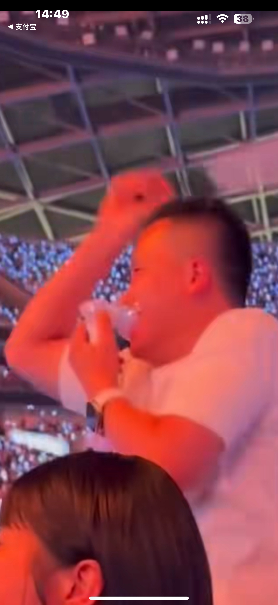
植物人也能上班了
直接来一首欢乐谷得了[憨笑]
跳楼机，大摆锤，我还吸粪车呢[愉快]
[捂脸][捂脸] 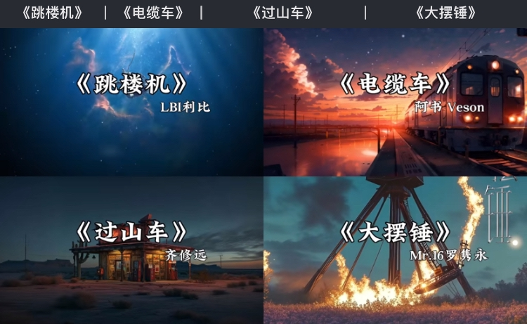
四月份我要出一个拖拉机，谁支持一下[憨笑]
有点像前几年的《出山》《下山》《炸山》[憨笑]
跳楼机至少旋律上耳，大摆锤真的好难听[黑脸]
大摆锤甚至还抄跳楼机[捂脸][捂脸]
baby我们的感情好像叮咚鸡 让我突然的胖猫然后哈基米～
两个歌都是唐歌，搞不懂是谁爱听啊[捂脸]
那啥，我也 get 不到跳楼机[黑脸]，打过来了我先跑[比心]
天雷滚滚我过山车
难怪安陵容的娘眼睛都织瞎了[捂脸][捂脸][捂脸]
像这种活的话，手一定要光滑细腻，有一点点的死皮都会勾线
我手指上的死皮都能给我丝袜都勾破了[泣不成声]
“我这衣裳啊，那可是苏绣”
这冲击力应该很大吧，A柱没变形，驾驶舱保护的很好。大祸已过，必有后福[赞]
传出去，问界撞翻一辆大卡车，平安无事
门能打开，没有自燃，车主安全，却是是个好车[赞]
驾驶室都没变形，太硬了，问界不错。[赞]果然安全才是最大的豪华。
这小玩意是真耐活[赞]
好可爱的广东宝宝
哥哥们别打了，小女子暂无成家的想法[玫瑰] 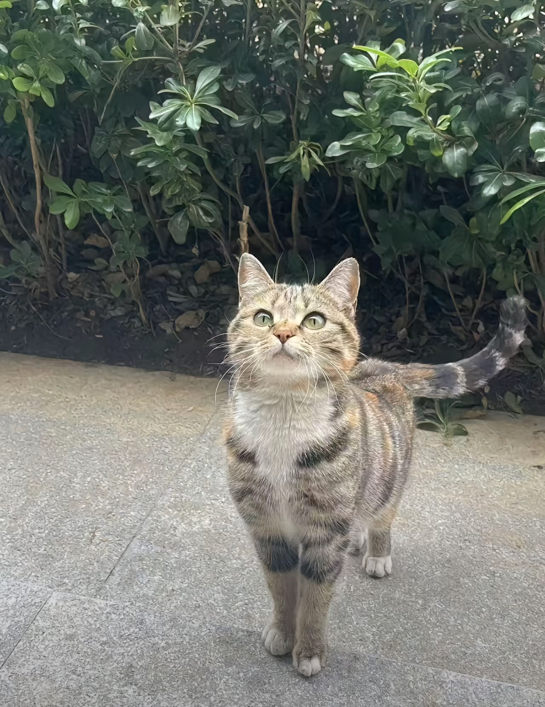
故人之姿 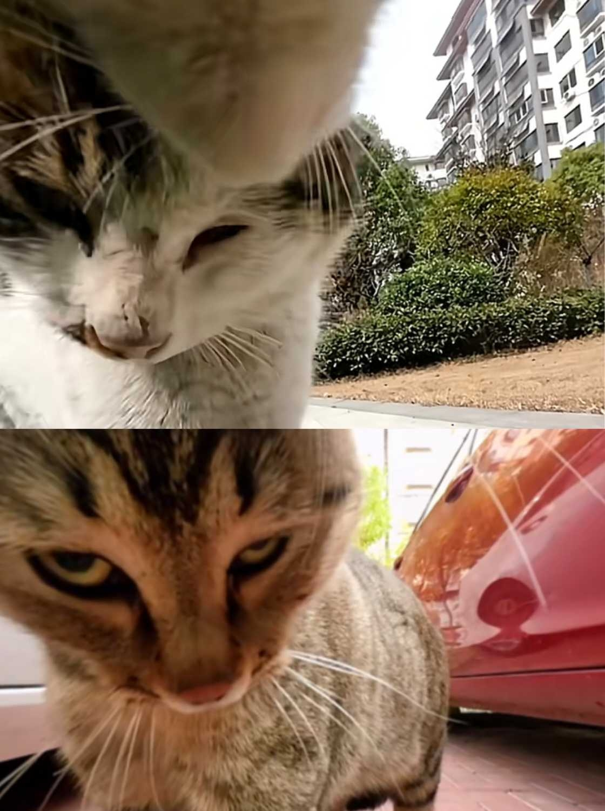
至今无猫能超过猫王[黑脸] 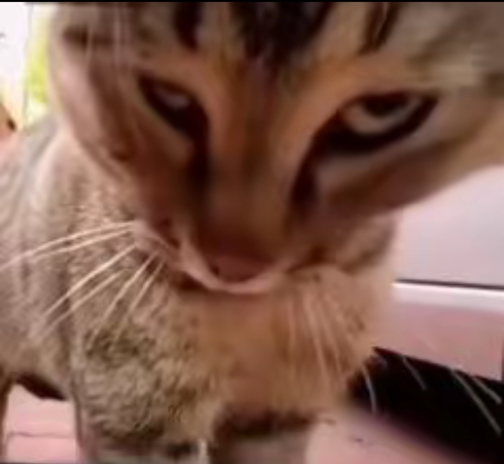
不要再吵了
来，别吵了！跟我回所里做个笔录 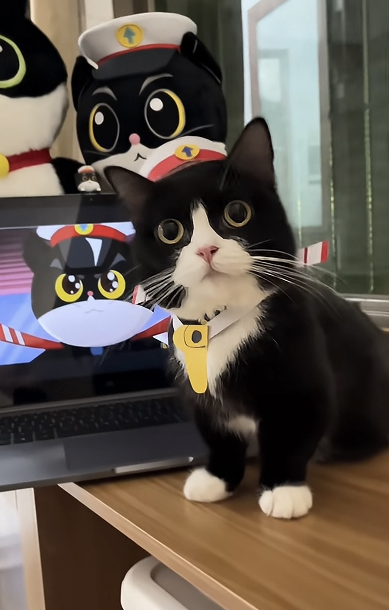
感觉凑凑的，谁敢闻

这不是一样的么 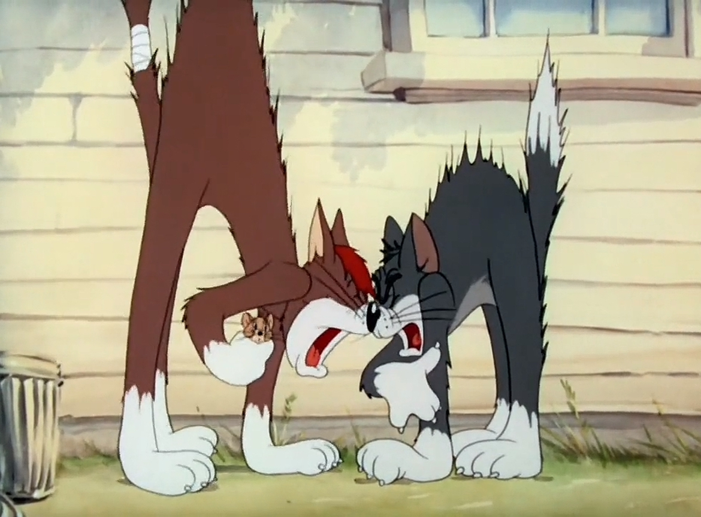
听说猫咪本来就是这样声音，为了讨人类喜欢，故意夹着喵喵叫
白猫：坏了，对方有行猫记录仪[愉快] 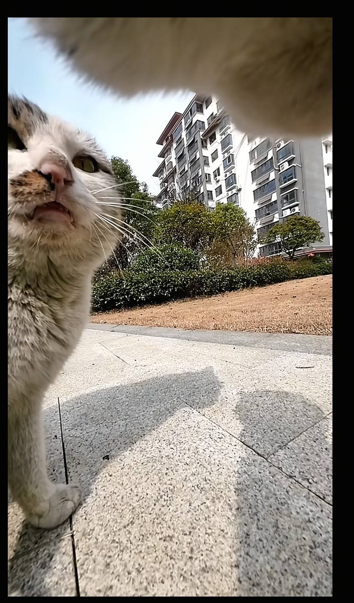
发生神马事了给二叔说？二叔点子多 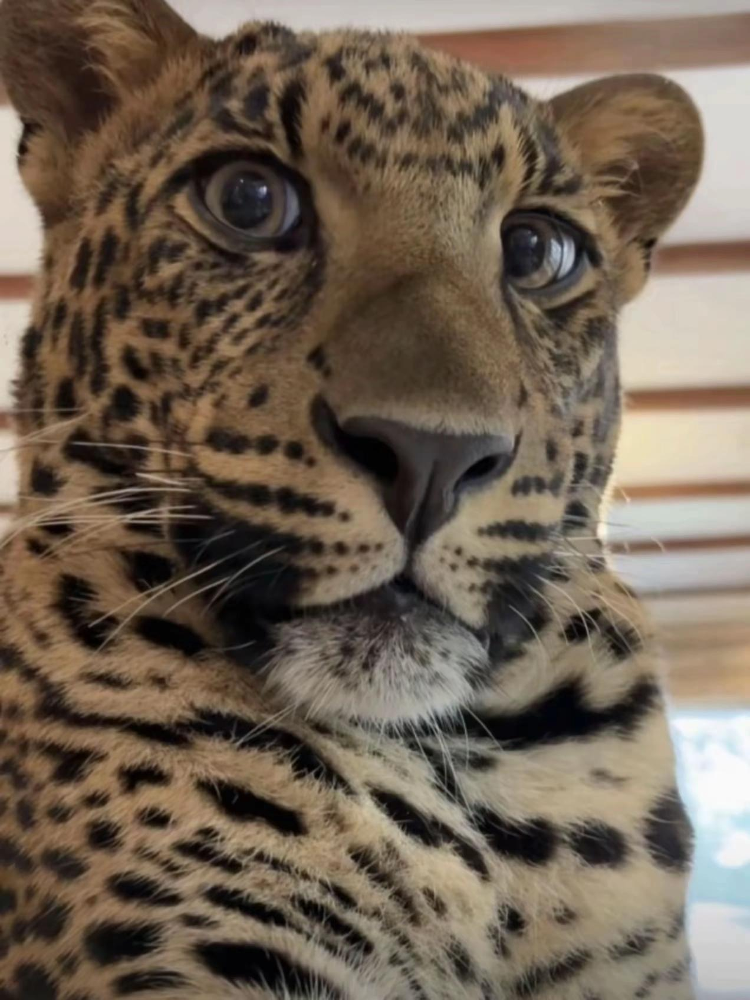
昨天去拜祖先的时候，我们摆完贡品，后面爸爸说可以吃贡品，他说祖先吃完，我们可以吃去的时候就看到祖先站在坟墓旁边看我。[流泪]
我以后要芒果味的[耶]
蜡烛熄灭的的白色是小颗粒，不是烟雾，没完全熄灭的烛芯接触到小颗粒就复燃了，你这个科学能解释
18生日无人问津
这电影又给zx演爽了，她真的很爱[比心][比心]
我发现我小时候看电影都没长脑子[捂脸]根本没想过这个男的问题很大，也没想到蓓蓓才是正牌女友，完全把自己带入女主了[捂脸]
这部剧最大的受害者是林志玲[泣不成声]
哈哈哈哈哈哈哈
周迅真的很喜欢演这种
如果换个女生早就被汉子茶欺负了吧[噢买尬]
汉子茶和绿茶婊的竞争 各凭本事 男的美美隐身[憨笑]
以前看这个电影还觉得蓓蓓太茶了[黑脸]现在男女主才是最恶心的，人家没谈的时候，两个人没有任何感情线，这两个人谈恋爱反而激起他们相互的谈恋爱的欲望了……
封面想咋滴。[微笑]
臭美妆蛋你为什么不换封面[憨笑]
所以文成公主嫁到西藏后为什么疯了，就是这个原因[宕机]
都说去布达拉宫能净化心灵，实际上是去了之后发现自己干的那点缺德事简直就是行善积德
这么大的鱼已经成精了，[宕机][宕机]最好是放了。我们村有个人吊了一条大鱼，然后拿回家煮着一家人都吃了，结果……一家人都吃饱了
鱼：再不救我 我就要淹死了 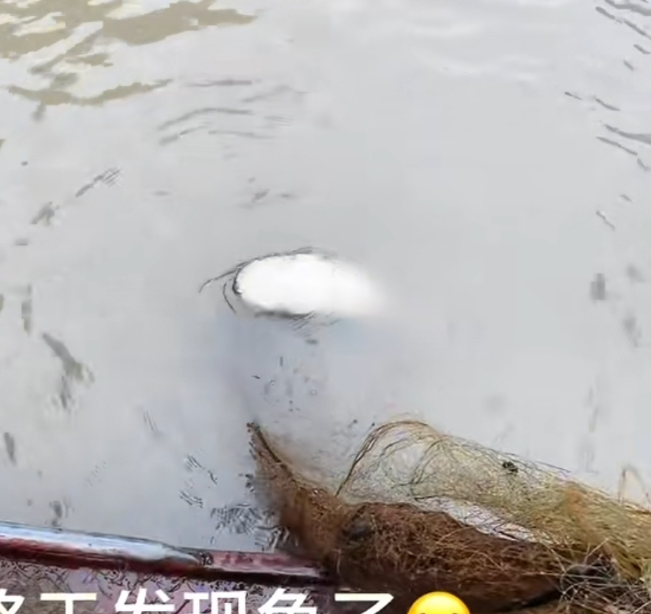
我今天就守在这，看哪个不开眼的要把本地土鲶说成塘鲺
老人：这是引路鱼快放了 年轻人：还有意外之喜开饭了 [看]
这眼神平常没少空军[看]
吃不得酸的，快放了，我报警了[流泪][流泪][流泪]
什么游戏避雷一下
逆水寒这招真狠啊！
很像一个表情包 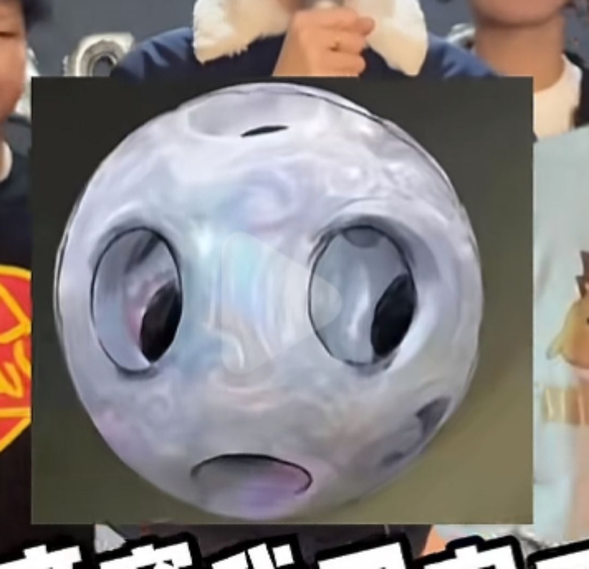
主包你再调侃我无名剑法我要生气了[黑脸][黑脸][黑脸]
到底是谁约的[憨笑][憨笑][憨笑]
？把我们少东家当日本人整呢[憨笑]
白色衣服那个身上有隔早就去洗澡[憨笑]
其实伞的抛春恨也一样[憨笑]对了主播，我抽到了一个八音窍，你再送我一个呗[憨笑]
希望中纪委介入调查马立军
马立军你要火了
马立军和辽宁队世仇，当年被王守强打一嘴巴子
Read more: